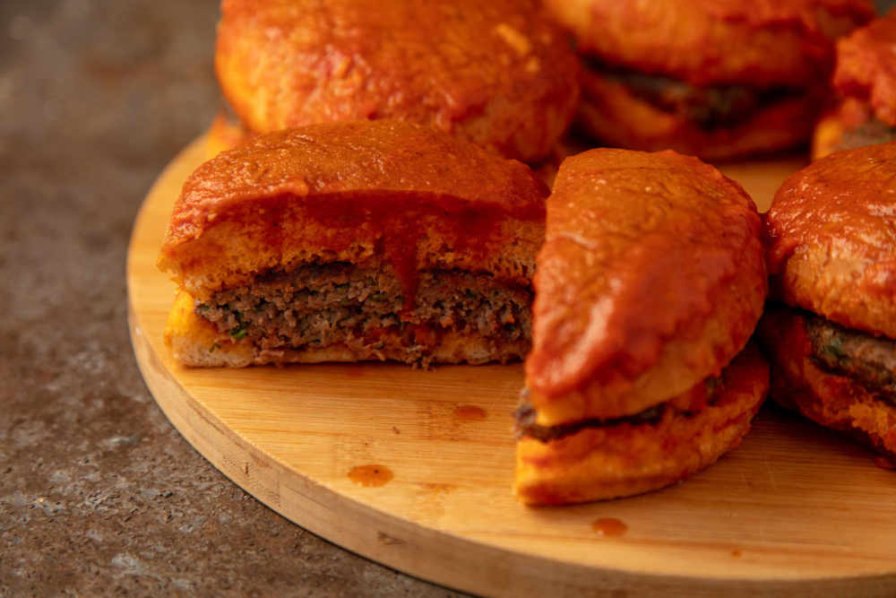

Islak Hamburger

Fanatikleri vardır onun. Ev yapımı hamburger bile mukayese edilemez onunla. Az ve öz malzemelidir.
Köftesi diğer hamburger köftelerinden biraz farklıdır, tat olarak anne köftesini andırır.
Domates sosu ayrıca hazırlanır ıslak hamburger tarifinin. Hafif kalın hazırlanan hamburger köfteleri döküm tavada kızartılır. Sosu içine çeken hamburger ekmekleri arasına yerleşir. Tabanına ıslak yağlı kağıt serilmiş, kapağı kapalı tencerede daha da nemlenip yumuşayana kadar kısa süre pişirin. Başka bir sosa yer vermeden sıcağı sıcağına servis edin, sevdiklerinizle paylaşın.
Yapalım bu hafta sonu bir ıslak hamburger, çıkartalım keyfini sıcacık evimizde.
Kaç Kişilik: 6
Pişirme Süresi: 30
Hazırlama Süresi: 30
Islak Hamburger Tarifi İçin Malzemeler Hamburger İçin :
- 400 gram orta yağlı dana kıyma
- 1 adet orta boy kuru soğan(robotta çekilmiş)
- 1 adet yumurta
- 2 yemek kaşığı galeta unu
- 1çay kaşığı tuz
- 1/2 çay kaşığı taze çekilmiş tane karabiber
- 6 adet hamburger ekmeği
Sosu İçin :
- 3 yemek kaşığı sıvı yağ
- 3 diş sarımsak
- 1,5 su bardağı domates püresi
- 3 yemek kaşığı ketçap
- 1 çay kaşığı tuz
- 1 çay kaşığı karabiber (silme)
- 1 su bardağı su
- 1 tatlı kaşığı toz şeker (isteğe göre)
Islak Hamburgerin Püf Noktası
Hamburger köftesini çok fazla yoğurmadan hazırlayın. 0-4 derece arasında dondurmadan, buzdolabında dinlendirin. Etin protein yapısını bozmamak için bu ısı aralığına dikkat edin.Hamburger köftesinde etin tadını almak için çok fazla baharat kullanmayın.Hamburger köftesini çok fazla pişirmeyin. Üzerine bastırdığınız köfte hafif sulu kalsın.
Islak Hamburger Nasıl Yapılır?
- Hamburger köftesi için karıştırma kabında 400 gr orta yağlı dana kıyma, 1 adet robottan geçirilmiş soğan, 1 adet yumurta ,2 yemek kaşığı galeta unu, 1 çay kaşığı tuz ve yarım çay kaşığı karabiberle birlikte iyice yoğurun. Üzerini kapatıp köfte harcını yarım saat buzdolabında dinlendirin.
- Dinlenen köfte harcından eşit parçalar alıp hamburger ekmeğinizin büyüküğünde köfteler hazırlayın.
- 3 yemek kaşığı sıvı yağ ile birlikte 3 diş sarımsağı 2 dakika kadar kavurun.
- 1,5 su bardağı domates püresi, 3 yemek kaşığı ketçap, 1'er çay kaşığı tuz, karabiber ve 1 su bardağı suyu da tencereye ilave edip sosu güzelce kaynatın. Sosunuz yeterince şekerli değilse 1 tatlı kaşığı kadar şeker de ilave edebilirsiniz.
- Sos pişerken köfteleri de ısıtılmış tavada arkalı önlü pişirin.
- Sos piştikten sonra ekmeklerin iç kısımlarını sosa batırın ve buhar aparatı koyduğunuz tencereye yerleştirip köfteyle birleştirin.
- Kalan sosu fırça yardımıyla hamburger ekmeğine yedirin. Üzerlerini fırın kağıdıyla kapatıp yumuşayana kadar; yaklaşık 6 dakika pişirin.
- Pişirdikten sonra sıcak olarak sevdiklerinizle paylaşın. Afiyet olsun!